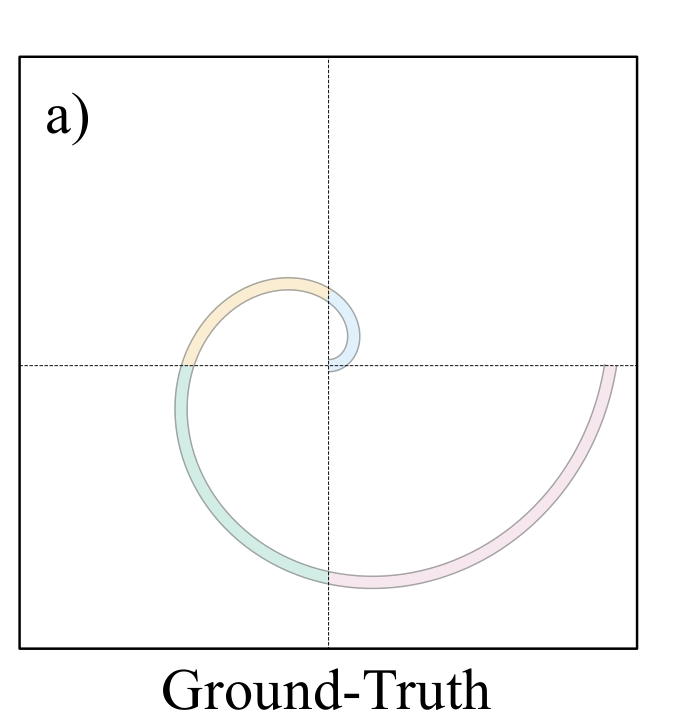
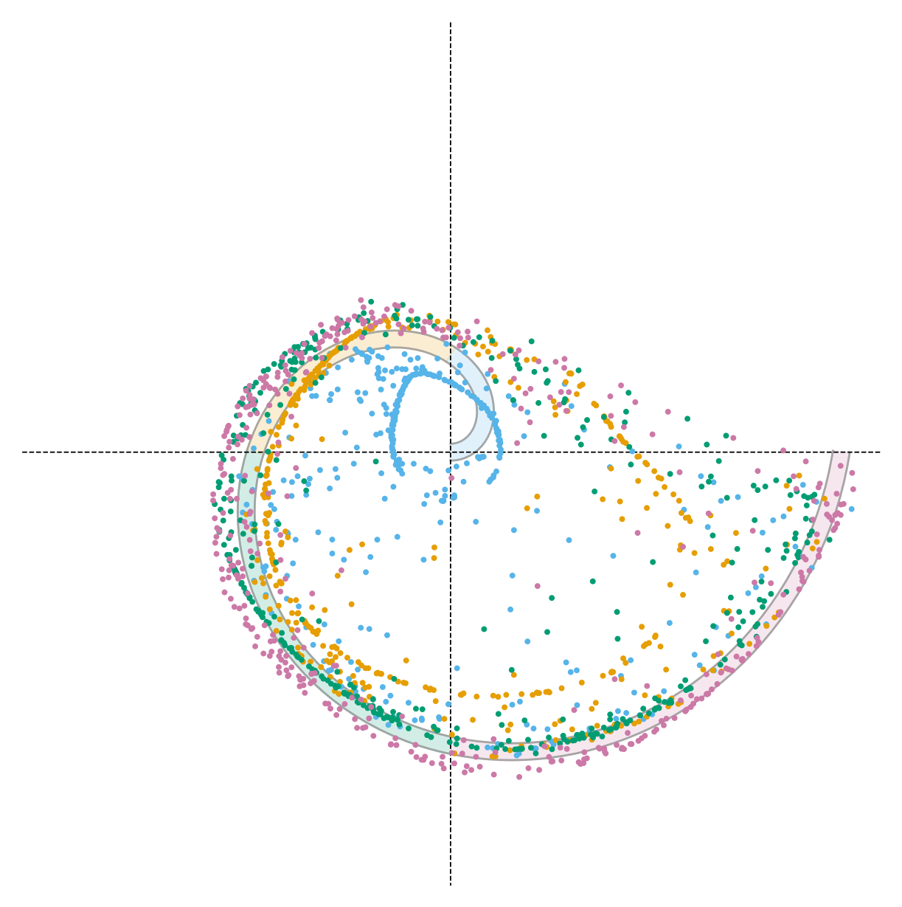
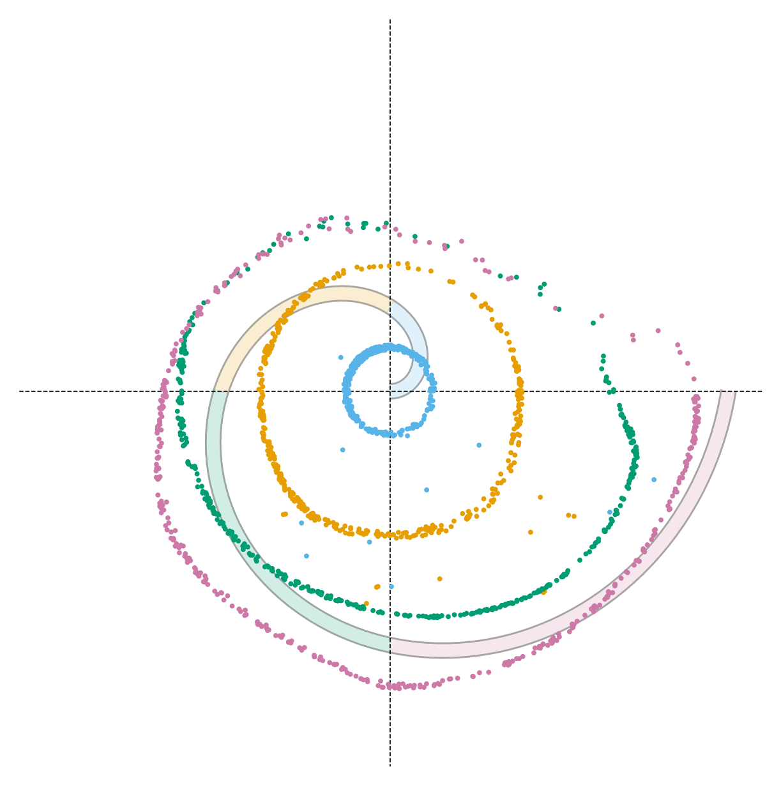
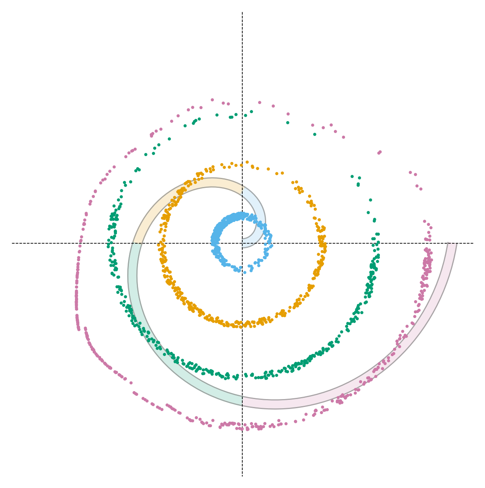
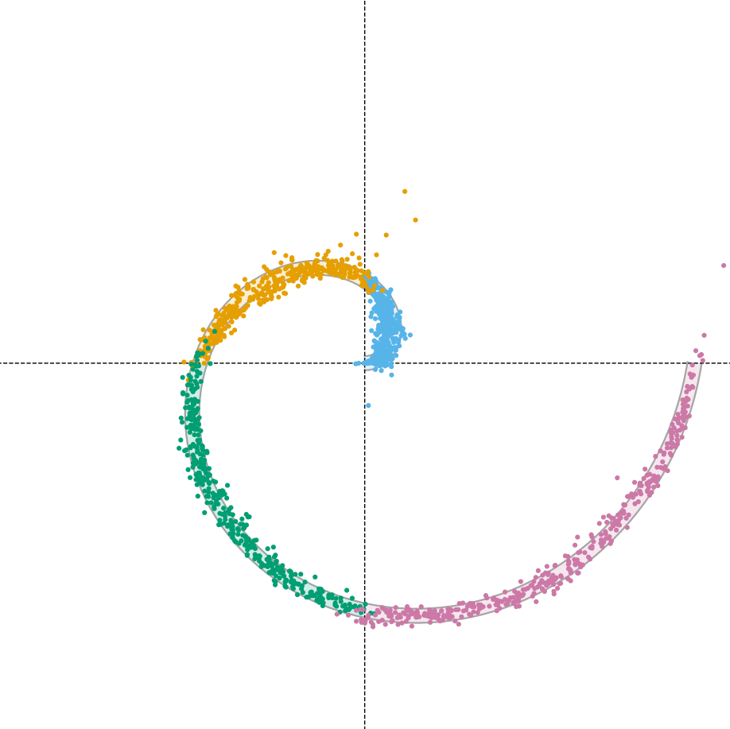

The Goal
The target is a 2D Archimedean spiral, partitioned into four arcs — one per quadrant — each spanning a distinct radius range. Each arc is a class, distinguished by color. Given a class label, a conditional flow model must generate samples that lie on the spiral and fall within the correct arc.
Standard Conditional FM Fails on Both Counts
A model trained on supervised pairs approximates the conditional distribution, but acts as a black box at inference — never verifying its output. The failures are twofold: samples, whose color marks the requested class, frequently land on the wrong quadrant (violating the class constraint) and often miss the spiral distribution altogether, failing on both fidelity and plausibility.
Inference-Time Guidance Trades One Failure for Another
Guidance uses the gradient of a radial penalty (measuring how far each sample strays from the target arc) to steer unconditional trajectories toward the correct quadrant. But the correction strength α must be hand-tuned, and no setting satisfies both criteria: weak guidance leaves samples on the wrong arc; strong guidance satisfies the radial constraint but pulls them entirely off the spiral. Choosing α means choosing which failure to accept.

α = 0.5 — too weak, effectively unconditional

α = 2.0 — radial constraint met, but off-manifold

α = 4.0 — structure collapses entirely

FlowBender: Both, Not Either
Trained to read its own alignment error at each step, FlowBender learns a nonlinear correction policy, not a scalar guidance weight. Samples land in the correct arc and remain on the spiral, both constraints satisfied. Fidelity and plausibility, simultaneously, with nothing to tune.